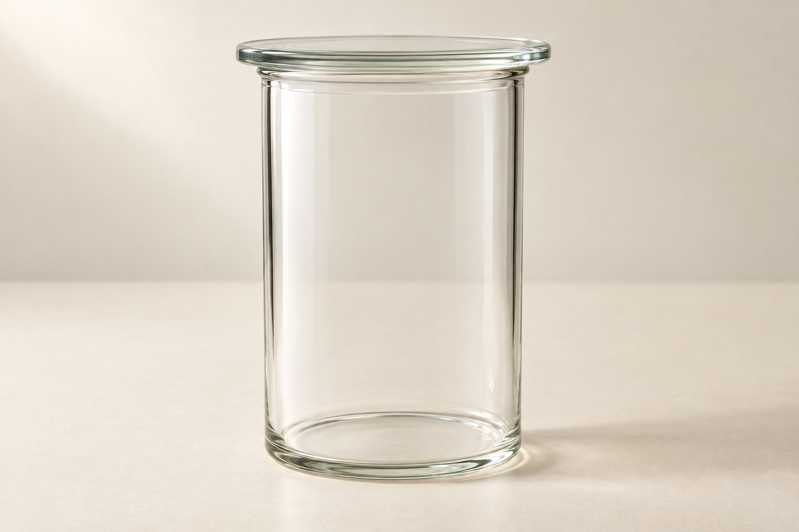

物質の成り立ち
原子と分子
原子と分子SeeD EDUCATION
酸素を、もっと細かく見てみよう

酸素は、目に見えない気体。
その中を、拡大するつもりで見てみよう。
原子と分子SeeD EDUCATION
小さな「まとまり」が、たくさん
酸素は、小さなまとまりの集まり。
丸2個が、1組になっている。
原子と分子SeeD EDUCATION
1組だけ、取り出して見よう
この1組が、酸素の小さなまとまり。
原子と分子SeeD EDUCATION
このまとまりを「分子」という
分子
酸素の中には、酸素分子がたくさんある。
原子と分子SeeD EDUCATION
では、丸1個は何だろう？
原子
酸素分子は、酸素原子2個からできている。
原子と分子SeeD EDUCATION
原子・分子を考えた人
ドルトン
原子の考え
アボガドロ
分子の考え
原子と分子SeeD EDUCATION
「原子2個」と「分子1個」
丸は2個 → 酸素原子2個
まとまりは1組 → 酸素分子1個
原子と分子SeeD EDUCATION
この図には、分子が何個？
酸素分子は3個
酸素原子は6個
原子と分子SeeD EDUCATION
水にも、分子がある
水も、小さなまとまりの集まり。
1つのまとまりが、水分子。
原子と分子SeeD EDUCATION
水分子は、原子3個のまとまり
酸素原子1個と、水素原子2個。
違う種類の原子が結び付いている。
原子と分子SeeD EDUCATION
分子と原子の違い
分子：その物質の性質を示す小さな粒子。
原子：物質をつくる、もとになる粒子。
原子と分子SeeD EDUCATION
まず、ここを覚えよう
いくつかの原子が結び付いた、小さなまとまりが分子。
原子と分子SeeD EDUCATION
原子には、種類がある
原子の種類によって、物質のつくりが変わる。
原子の種類を「元素」という。
原子と分子SeeD EDUCATION
「原子」は粒。「元素」は種類。
原子は3個。
元素は酸素の1種類。
原子と分子SeeD EDUCATION
水分子では、何個・何種類？
原子は全部で3個。
元素は酸素と水素の2種類。
原子と分子SeeD EDUCATION
化学変化では、原子は分けられない
化学変化では、原子をそれ以上分けない。
原子と分子SeeD EDUCATION
化学変化でも、原子は残る
原子は、新しくできたり、なくなったりしない。
別の種類の原子に変わることもない。
原子と分子SeeD EDUCATION
種類ごとに、質量や大きさが決まる
原子の質量や大きさは、種類によって違う。
原子と分子SeeD EDUCATION
原子の種類を、短い記号で書こう
酸素の元素記号は O。
元素を表す記号が「元素記号」。
原子と分子SeeD EDUCATION
水素はH、酸素はO
水素：H（エイチ）
酸素：O（オー）
原子と分子SeeD EDUCATION
1文字目は大文字、2文字目は小文字
銅は Cu。
CU、cu とは書かない。
原子と分子SeeD EDUCATION
水素・酸素・炭素・窒素
H
水素
O
酸素
C
炭素
N
窒素
原子と分子SeeD EDUCATION
身近な金属の記号
Fe
鉄
Cu
銅
Ag
銀
原子と分子SeeD EDUCATION
よく使う金属の記号
Na
ナトリウム
Mg
マグネシウム
Al
アルミニウム
Ca
カルシウム
原子と分子SeeD EDUCATION
硫黄と塩素
S
硫黄
Cl
塩素
原子と分子SeeD EDUCATION
補足：ケイ素・リン・カリウム
Si
ケイ素
P
リン
K
カリウム
原子と分子SeeD EDUCATION
元素記号の確認
水素？
酸素？
銅？
塩素？
水素 H ／ 酸素 O
銅 Cu ／ 塩素 Cl
原子と分子SeeD EDUCATION
酸素分子を、記号入りの丸で見る
丸のOは、酸素原子の種類を表す。
2個のOで、酸素分子1個。
原子と分子SeeD EDUCATION
この1組を、O₂と書く
O：酸素原子
右下の2：1分子の中の原子が2個
原子と分子SeeD EDUCATION
物質を記号で表したものが、化学式
化学式
元素記号と数字を使って、物質を表す。
原子と分子SeeD EDUCATION
水の化学式は、H₂O
Hは2個なので、H₂。
Oは1個。1は省略する。
水：H₂O
原子と分子SeeD EDUCATION
水分子が2個なら、2H₂O
水分子を、もう1個。
2H₂O：水分子が2個。
前の2は、分子の個数。
原子と分子SeeD EDUCATION
二酸化炭素の化学式は？
Cは1個、Oは2個。
二酸化炭素：CO₂
原子と分子SeeD EDUCATION
アンモニアの化学式は？
Nは1個、Hは3個。
アンモニア：NH₃
原子と分子SeeD EDUCATION
アンモニア分子が3個なら？
アンモニア分子が3個。
3NH₃
窒素原子3個、水素原子9個。
原子と分子SeeD EDUCATION
前の2と、右下の2は別の意味
前の数字（係数）：分子の個数。
右下の数字：1分子の中の原子数。
原子と分子SeeD EDUCATION
2個で1分子になる、4つの気体
H₂
水素
O₂
酸素
N₂
窒素
Cl₂
塩素
原子と分子SeeD EDUCATION
分子をつくらない物質もある
銅や鉄などの金属は、分子をつくらない。
決まった数の、小さな組に分かれていない。
原子と分子SeeD EDUCATION
銅の化学式は、Cu
銅：Cu
分子をつくらない金属も、化学式で表せる。
原子と分子SeeD EDUCATION
食塩も、分子をつくらない
ナトリウムと塩素が、1：1で並ぶ。
塩化ナトリウム：NaCl
原子と分子SeeD EDUCATION
化学式が表すのは「個数」か「比」
H₂O水素2個・酸素1個
NaClナトリウム：塩素＝1：1
H₂O：1分子の中の原子の個数。
NaCl：構成する粒子の数の比。
原子と分子SeeD EDUCATION
単体：元素が1種類
単体
酸素・水素・銅・鉄など。
原子と分子SeeD EDUCATION
化合物：元素が2種類以上
化合物
違う種類の原子が結び付いてできた物質。
原子と分子SeeD EDUCATION
O₂は、原子が2個。化合物？
Oが2個あっても、元素は1種類。
O₂は単体。
原子と分子SeeD EDUCATION
混ざっているだけなら、混合物
2種類以上の物質が混ざったもの。
混合物
空気や食塩水は、混合物。
原子と分子SeeD EDUCATION
食塩と食塩水は、分類が違う
食塩塩化ナトリウム
食塩水塩化ナトリウム ＋ 水
食塩：化合物
食塩水：混合物
原子と分子SeeD EDUCATION
2つの見方を、分けて考える
| 単体 | 化合物 | |
|---|---|---|
| 分子をつくる | 酸素 O₂ | 水 H₂O |
| 分子をつくらない | 銅 Cu | 食塩 NaCl |
酸素も銅も、単体。
水も食塩も、化合物。
原子と分子SeeD EDUCATION
ここまでの復習
丸1個は、原子。
原子が結び付いたまとまりは、分子。
酸素分子1個は、O₂。
原子と分子SeeD EDUCATION
物質を、粒子で説明できるように
分子の中には、原子がある。
原子の種類を、元素記号で表す。
物質を、化学式で表す。
原子と分子SeeD EDUCATION